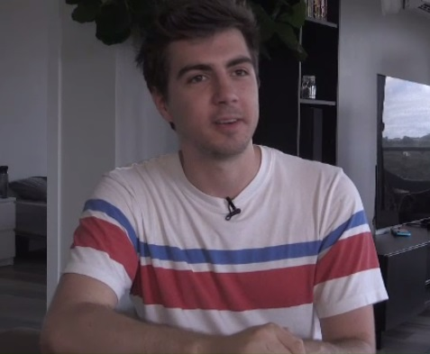

Christian Selig
bron: ctvnews.com
Christian Selig is de bedenker en bouwer van de reddit app apollo. Hij heeft dit zelf en in zijn eentje bedacht en gemaakt. Hij is een van mijn helden, omdat de app die hij heeft gemaakt heel goed werkt vind ik zelf. Hij de app niet vol stopt met advertenties wat ik ook heel fijn vind. Hij bouwt zelf in zijn eigen tijd deze app, omdat hij het lijkt vindt en vele mensen gebruiken het nu. Ja, er zit ook een abonnement functie in, maar die is niet super prominent aanwezig. Hij doneerde ook 27.000 dollar aan zijn lokale dakloze opvang. Dit alles maakt hem een goede man in mijn ogen en iemand om naar op te kijken. Hij blogt op zijn website over programmeren en onder ander SwiftUI. Ik vind deze blogs ook zeker nuttig als ik een probleem heb vooral, omdat de code duidelijk is weergegeven en je het dus makkelijk kan kopiëren en plakken. De andere app die hij heeft gemaakt Pixel Pals is een volgens mij gebaseerd op de tamagotchi. Het idee hiervan vind ik wel geinig en de technische uitwerking is echt super goed. Alle manieren waar hij het in verwerkt heeft is echt goed, bijvoorbeeld in het nieuwe Dynamic Island. Alleen zie ik er voor mijzelf niet echt nut in.